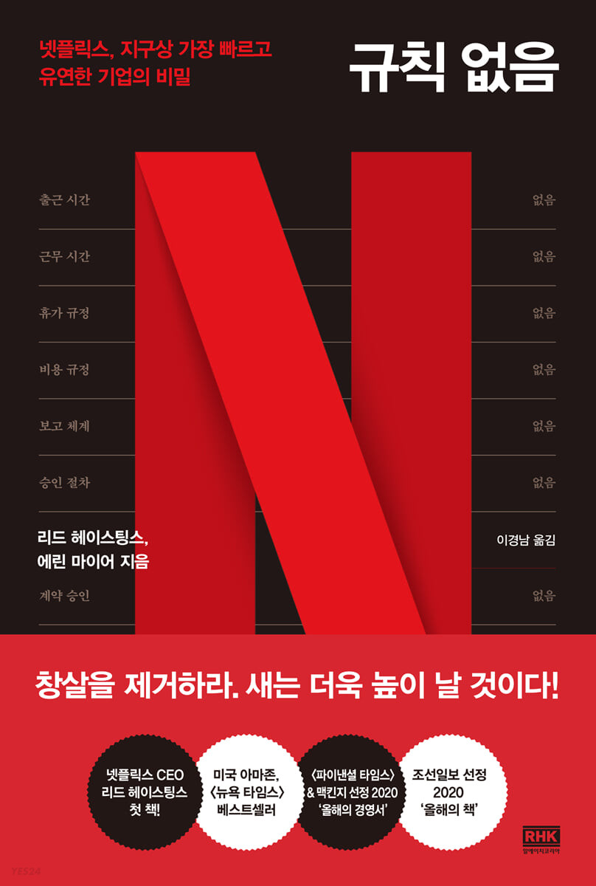

전체 글
Default View
Filter
Sort
2 sorts
title
Add filter
title
tags
publish
inList
slug
date
ML Agents 예제를 분석해보자
유니티3D
아들과 2인개발
ML Agent
ml-agents-examples
June 25, 2022
ML Agents로 점프 플레이어 AI 만들기
아들과 2인개발
유니티3D
ML Agent
ml-agents-first-try
June 24, 2022
게임 출시 후 8개월이 지났다
아들과 2인개발
8months-after-release
April 24, 2022
NPM 소스 수정해서 쓰기
블로그
developing-npm
April 15, 2022
요즘 시대에 “일을 잘 한다는 것”은 감각이 있다는 것
일잘러
책
March 16, 2021
“마음 가면”을 내려 놓고 진정한 나로 살아가기
책
행복
February 15, 2021
변화를 이끌어 내는 “스위치”
책
일잘러
February 1, 2021
내 수준에 맞는 원서 찾는 법
학습
영어
October 22, 2020
한계가 없는 기억력에 도전하자
학습
October 5, 2020
시간관리를 잘 하는 사람들의 비법
일잘러
September 30, 2020
URP 패키지 설치가 오래 걸리는 이유
유니티3D
URP 포팅
URP
urp-porting-5-installing-takes-too-long
June 15, 2020
2D 캐릭터 애니메이션과 IK
아들과 2인개발
IK
유니티3D
gadevwithson-2d-character-animation-ik
May 1, 2020
안되겠다! 2D로 다시 만들저
아들과 2인개발
유니티3D
again-with-2d-game
April 30, 2020
2 패스 셰이더 포팅
유니티3D
URP
URP 포팅
urp-porting-4
February 20, 2020
[실험보았다] 간접광/환경광 밝기의 의미를 알아보자
보았다] 간접광/환경광 밝기의 의미를 알아보자렌더링
유니티3D
February 18, 2020
커스텀 라이팅 셰이더 포팅
유니티3D
URP 포팅
URP
HLSL
urp-porting-3
February 12, 2020
NGUI와 간단한 셰이더 포팅
URP 포팅
유니티3D
URP
Shader Graph
urp-porting-2
February 8, 2020
유니티 2019.3 출시, 포팅 시작
유니티3D
URP
URP 포팅
urp-porting-1
February 2, 2020
[실험보았다] 광원이 여러 개일때 여러 겹의 메시를 올바르게 알파블랜딩하려면
보았다] 광원이 여러 개일때 여러 겹의 메시를 올바르게 알파블랜딩하려면렌더링
유니티3D
January 28, 2020
3D 모델에 글씨 쓰기
아들과 2인개발
Decal
유니티3D
text-decal
January 4, 2020
AR 그랩 시스템
아들과 2인개발
URP
유니티3D
grab-system
November 13, 2019
AR Foundation으로 새로 태어난 건조기 몬스터
AR
ARFoundation
유니티3D
URP
아들과 2인개발
urp-arfoundation
October 9, 2019
건조기 몬스터 1.0
유니티3D
블렌더
아들과 2인개발
dryingmachine-1
September 28, 2019
Linq로 부드러운 노멀 벡터 구하기에 도전
아들과 2인개발
유니티3D
Linq
렌더링
linq-smoothing-normals
September 24, 2019
Universal RP로 구현한 툰 셰이딩
아들과 2인개발
SRP
URP
렌더링
유니티3D
toon-shading-universalrp
September 18, 2019
유니티 프로젝트 셋업
아들과 2인개발
SRP
게임개발
유니티3D
unity-project-setup
September 10, 2019
7살 아들과 시작하는 2인 게임 개발
아들과 2인개발
게임개발
gamedev-with-son
September 8, 2019
MSAA와 Alpha To Coverage
렌더링
August 1, 2019
최초 직감의 오류 (First Instinct Fallacy)
인지편향
first-instinct-fallacy
일잘러
luck
일잘러
feedback
일잘러
client-satisfaction
일잘러
refine-question
일잘러
개발방법
code-quality
일잘러
work-attitude
일잘러
pomodoro
일잘러
good-worker

책
no-rules-rules
책
radical-candor
책
think-again
집착하고 얼어붙기(seizing and freezing)
인지편향
seizing-and-freezing
결정
decision
확증 편향 (Confirmation Bias)
인지편향
confirmation-bias
소망 편향 (Desirability Bias)
인지편향
desirability-bias
나는 편향되지 않았다는 편향 (Bias Blind Spot)
인지편향
bias-blind-spot
인지의 유연성
뚱뚱한 고양이 증후군
인지편향
안톤 증후군 (Anton’s syndrome)
인지편향
antons-syndrome
쿼터백증후군(armchair quarterback syndrome)
인지편향
armchair-quarterback-syndrome
가면 증후군 (Imposter Phenomenon)
인지편향
impostor-phenomenon
Count99
Unique31